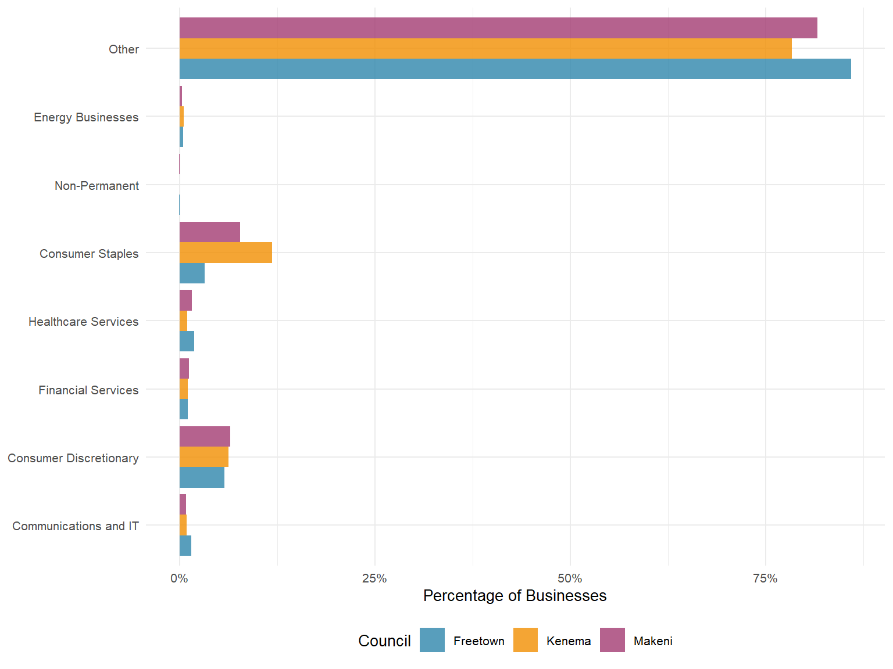
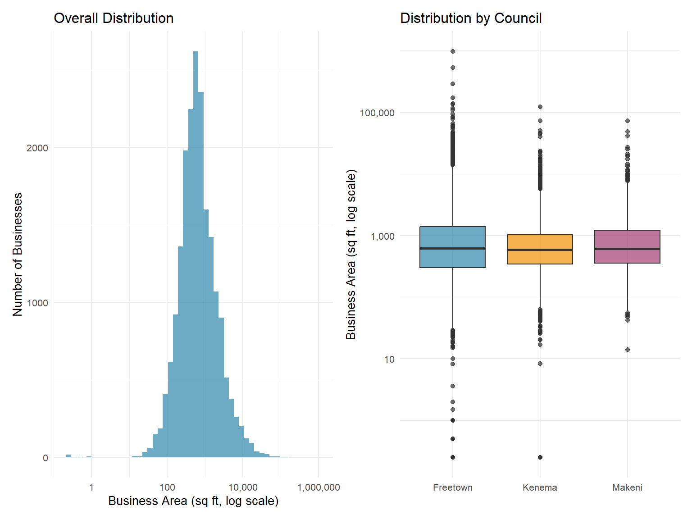
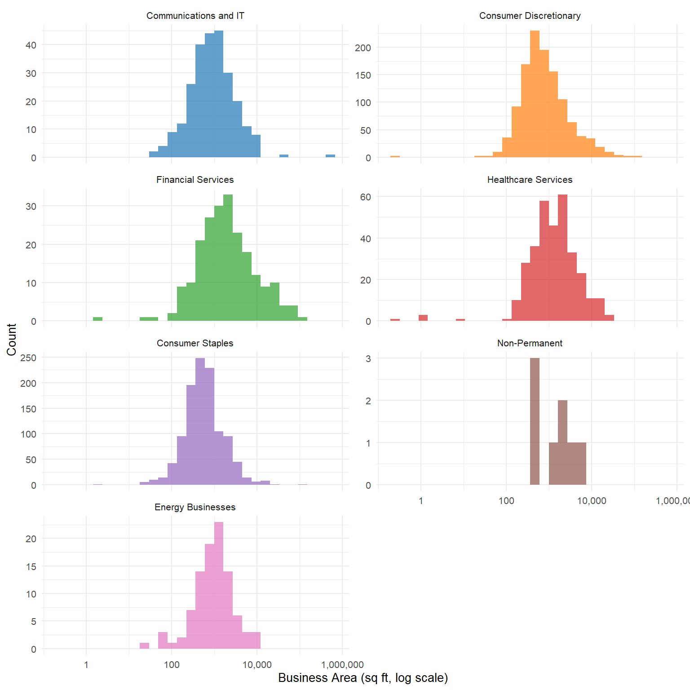
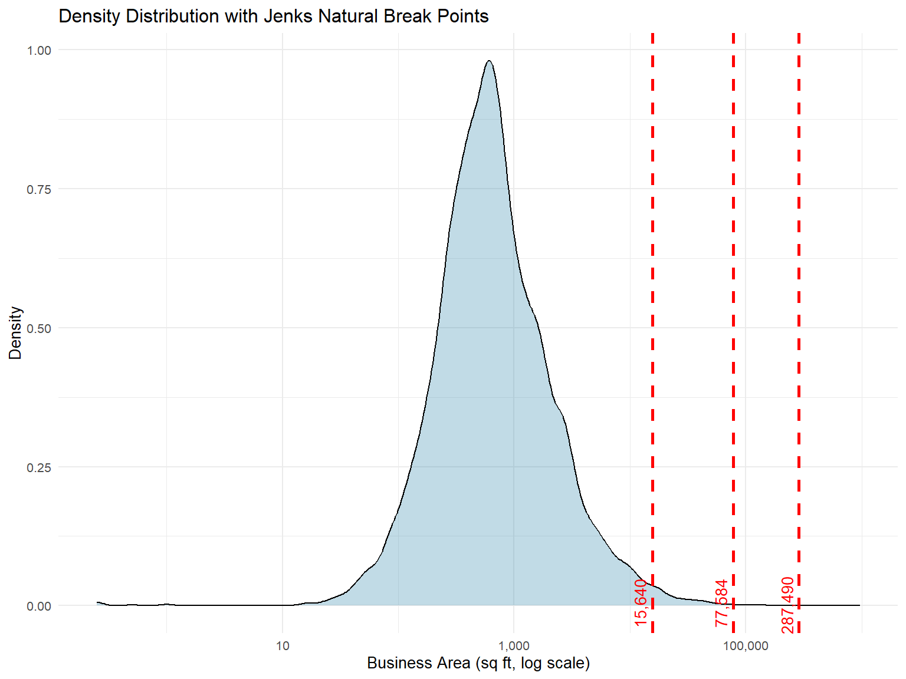
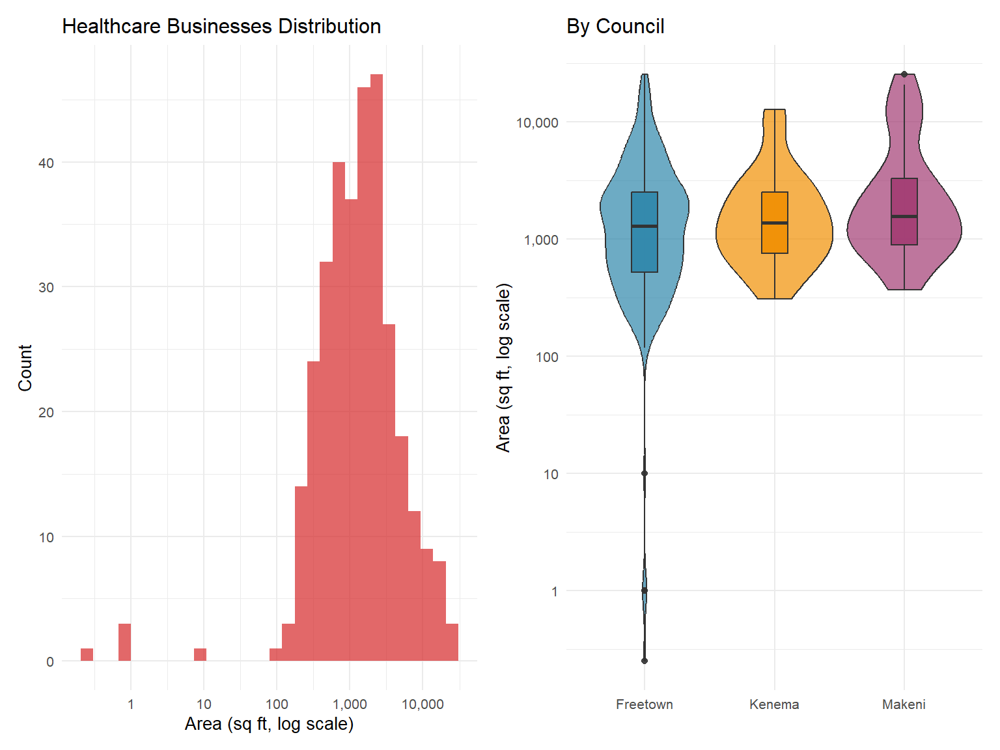
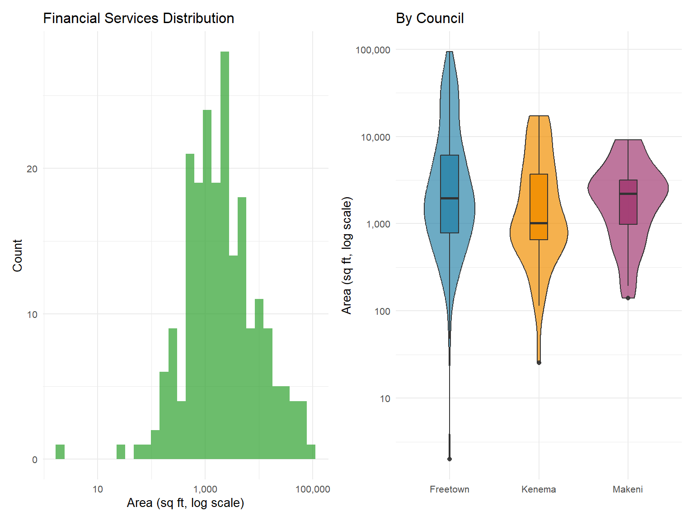
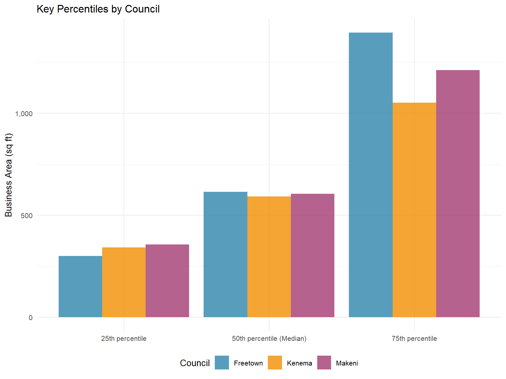
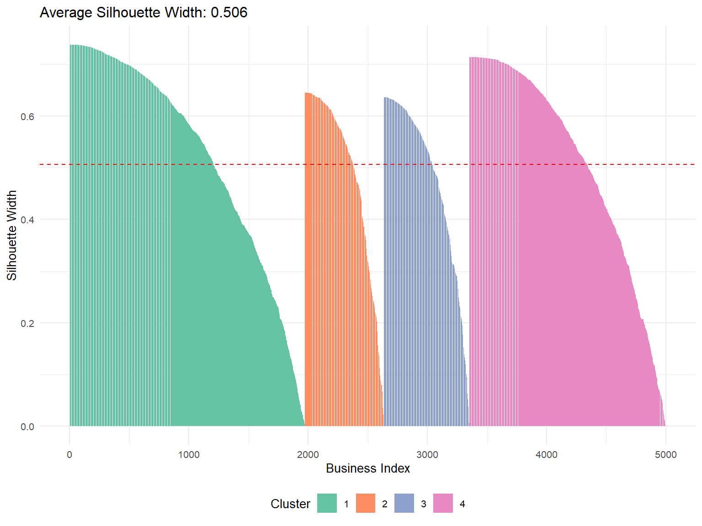

| council | Number of Businesses | Mean Area (sq ft) | Median Area (sq ft) | Min Area (sq ft) | Max Area (sq ft) |
|---|---|---|---|---|---|
| Freetown | 12,843 | 1,765.55 | 615.10 | 0.25 | 965,612.80 |
| Kenema | 4,022 | 1,144.07 | 592.47 | 0.25 | 121,818.84 |
| Makeni | 2,813 | 1,178.34 | 605.02 | 13.98 | 72,922.04 |
Business Surface Area Analysis for Moptax Logic Slots
Division Points for Business Sub-categories in Sierra Leone Local Councils
0.1 Executive Summary
This analysis examines business surface area data from three Sierra Leone local councils (Freetown, Makeni, and Kenema) to identify optimal division points for business sub-categories in the Moptax 2.0 system. The analysis covers 19,678 businesses across seven main categories.
0.2 Key Findings
Based on statistical analysis using multiple clustering methods, we recommend the following area-based logic slots:
Small businesses: < 500 sq ft
Medium businesses: 500 - 2,000 sq ft
Large businesses: 2,000 - 10,000 sq ft
Very large businesses: > 10,000 sq ft
These breaks align with natural clusters in the data and provide practical thresholds for tax administration.
0.3 Data Overview
0.4 Distribution by Business Category

0.5 Area Distribution Analysis
0.5.1 Overall Distribution

0.5.2 Distribution by Category

0.6 Statistical Break Point Analysis
0.6.1 Methodology
We employed three statistical methods to identify natural break points in the business area data:
Jenks Natural Breaks: Minimizes within-class variance while maximizing between-class variance
Quantile-based breaks: Divides data into equal-sized groups
K-means clustering: Groups data points to minimize within-cluster sum of squares
0.6.2 Overall Break Points
| Method | Small (sq ft) | Medium (sq ft) | Large (sq ft) |
|---|---|---|---|
| Jenks Natural Breaks | 15,640 | 77,584 | 287,490 |
| Quantiles (25%, 50%, 75%) | 317 | 604 | 1,281 |
| K-means Clustering | 215 | 680 | 2,370 |

0.6.3 Category-Specific Break Points
| Category | Recommended Breaks (sq ft) |
|---|---|
| Communications and IT | Small: <3,508 | Medium: 3,508-11,193 | Large: >11,193 |
| Consumer Discretionary | Small: <5,110 | Medium: 5,110-17,635 | Large: >17,635 |
| Financial Services | Small: <6,965 | Medium: 6,965-20,385 | Large: >20,385 |
| Healthcare Services | Small: <2,605 | Medium: 2,605-6,610 | Large: >6,610 |
| Consumer Staples | Small: <1,818 | Medium: 1,818-9,203 | Large: >9,203 |
| Energy Businesses | Small: <1,119 | Medium: 1,119-2,563 | Large: >2,563 |
0.6.4 Detailed Category Analysis
| category | Count | Mean (sq ft) | Median (sq ft) | SD (sq ft) | IQR (sq ft) | 90th Percentile (sq ft) |
|---|---|---|---|---|---|---|
| Consumer Discretionary | 1,172 | 2,250.3 | 684.9 | 7,188.8 | 1,230.8 | 4,045.9 |
| Consumer Staples | 1,114 | 1,144.2 | 546.8 | 3,966.1 | 696.4 | 2,385.6 |
| Healthcare Services | 326 | 2,608.5 | 1,369.5 | 3,814.3 | 1,966.0 | 6,186.1 |
| Communications and IT | 253 | 3,832.6 | 832.3 | 33,642.4 | 1,461.3 | 4,022.4 |
| Financial Services | 216 | 6,296.2 | 1,850.3 | 12,520.1 | 4,317.8 | 16,466.2 |
| Energy Businesses | 96 | 1,532.6 | 1,045.9 | 1,891.0 | 1,237.6 | 3,028.1 |
| Non-Permanent | 8 | 1,905.9 | 1,606.9 | 1,592.4 | 2,309.1 | 3,975.2 |
0.6.5 Healthcare Services Deep Dive

0.6.6 Financial Services Deep Dive

0.7 Implementation Recommendations
0.7.1 Proposed Logic Slot Structure
Based on our analysis, we recommend the following tiered structure for Moptax 2.0:
0.7.1.1 Universal Tiers (All Categories)
| Tier | Area Range (sq ft) | Typical Examples | Percentage of Businesses |
|---|---|---|---|
| Micro | < 200 | Small stalls, kiosks | 12.9% |
| Small | 200 - 500 | Small shops, offices | 28.5% |
| Medium | 500 - 2,000 | Restaurants, clinics | 43.3% |
| Large | 2,000 - 10,000 | Supermarkets, banks | 13.5% |
| Enterprise | > 10,000 | Schools, hospitals | 1.9% |
0.7.1.2 Category-Specific Adjustments
| Category | Special Consideration | Adjusted Small Threshold |
|---|---|---|
| Healthcare Services | Higher space requirements for equipment | < 800 sq ft |
| Financial Services | Security and customer service areas | < 600 sq ft |
| Non-Permanent | Temporary structures, lower threshold | < 150 sq ft |
| Energy Businesses | Safety buffer zones required | < 1,000 sq ft |
0.7.1.3 Council-Specific Insights

0.7.2 Validation Analysis

1 Conclusions and Next Steps
1.1 Key Findings
Natural Clusters Exist: The analysis reveals clear natural break points in business sizes across all three councils, supporting a tiered tax structure.
Four-Tier System Optimal: Statistical analysis suggests that a four-tier system (Small, Medium, Large, Very Large) provides the best balance between administrative simplicity and fairness.
Category Variations: While universal tiers work for most businesses, certain categories (Healthcare, Financial Services, Energy) may benefit from adjusted thresholds.
Council Consistency: Despite some variations, the break points are remarkably consistent across all three councils, supporting a unified approach.
1.2 Recommended Break Points for Moptax 2.0
| Logic Slot | Area Range (sq ft) | Expected Tax Rate | Businesses Affected |
|---|---|---|---|
| Slot 1 (Micro/Small) | 0 - 500 | Base rate | 8,147 |
| Slot 2 (Medium) | 501 - 2,000 | Base × 1.5 | 8,514 |
| Slot 3 (Large) | 2,001 - 10,000 | Base × 2.5 | 2,645 |
| Slot 4 (Enterprise) | > 10,000 | Base × 4 | 372 |